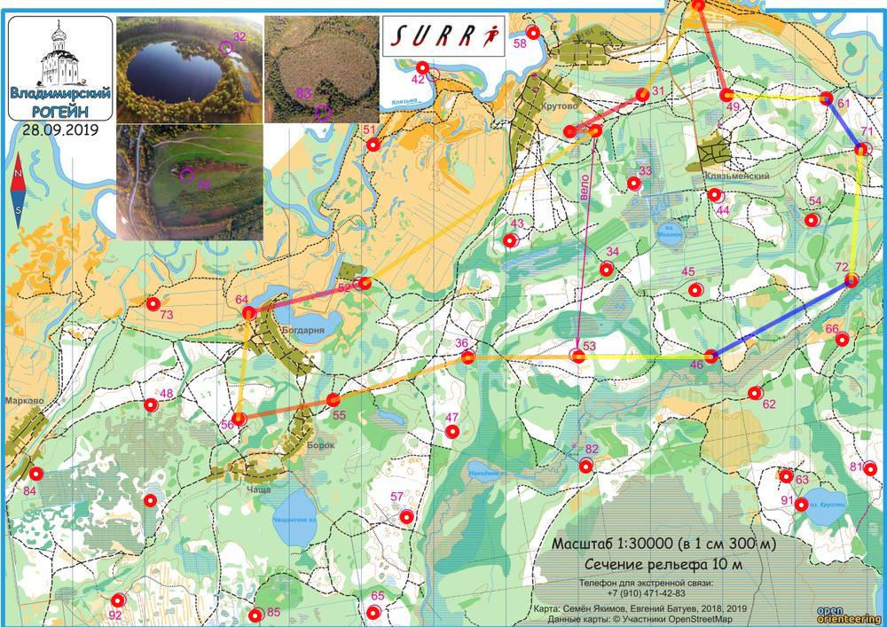

| Команда | Тортиллы |
| Номер | 59 |
| Участники | Анпилова Марина 1982 Маурина Ирина 1985 |
| Группа | ж |
| Место | 14 |
| Очки | 68 |
| Штраф | 0 |
| Время | 07:56:09 |
| Результат | 68 |
| КП | Время | Сплит | Расстояние, км | Темп, мин/км | Отметка, сек |
|---|---|---|---|---|---|
| С | 12:00:00 | ||||
| 32 | 12:06:52 | 00:06:52 | 0.346 | 19.8 | 21 |
| 31 | 12:39:31 | 00:32:39 | 1.111 | 29.4 | 2 |
| 59 | 13:00:57 | 00:21:26 | 1.473 | 14.6 | 5 |
| 49 | 13:30:21 | 00:29:24 | 1.309 | 22.5 | 7 |
| 61 | 13:46:01 | 00:15:40 | 1.371 | 11.4 | 5 |
| 71 | 20:38:15 | 4590:52:14 | 0.844 | >999 | 0 |
| 72 | 14:50:33 | -4590:12:18 | 1.819 | <1 | 3 |
| 46 | 20:38:00 | 4589:47:27 | 2.201 | >999 | 0 |
| 53 | 16:21:41 | -4589:43:41 | 1.811 | <1 | 4 |
| 36 | 16:45:46 | 00:24:05 | 1.534 | 15.7 | 3 |
| 55 | 17:16:40 | 00:30:54 | 1.957 | 15.8 | 4 |
| 56 | 17:43:41 | 00:27:01 | 1.325 | 20.4 | 2 |
| 64 | 18:04:55 | 00:21:14 | 1.472 | 14.4 | 8 |
| 52 | 19:01:21 | 00:56:26 | 1.648 | 34.2 | 4 |
| Ф | 19:56:09 | 00:54:48 | 3.819 | 14.3 | |
| 07:56:09 | 20.41 км | 23.3 мин/км |
